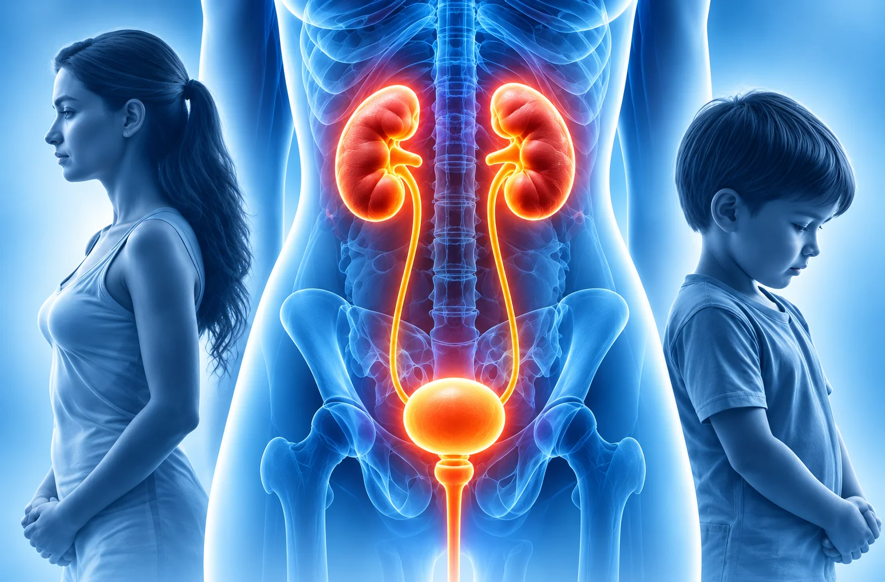

Female & Paediatric Urology
Specialist Care for
Specialist Care for
Women and Children
Comprehensive evaluation and treatment for urinary conditions in women and children, with personalised care for every age and stage.
Book Your AppointmentWomen’s
Urological Care
Urological Care
Children’s
Urological Care
Urological Care
Safe & Advanced
Treatment Options
Treatment Options
Compassionate
and Personalised Care
and Personalised Care

UnderstandingFemale & Paediatric
Female & Paediatric
Urological Conditions
Women and children can experience a range of urinary problems that affect the kidneys, bladder, ureters or urethra.
These conditions may be due to infections, structural abnormalities, hormonal changes or functional issues. A proper evaluation helps identify the exact cause and determine the most suitable treatment.
Common Symptoms
Symptoms can vary depending on the condition and age. Common symptoms in women and children include:
- Frequent urination
- Bedwetting in children
- Urinary leakage (incontinence)
- Difficulty passing urine
- Pain or burning while urinating
- Lower abdominal pain
- Recurrent urinary tract infections
- Blood in the urine
Diagnosis & Evaluation


Ultrasound &

Urodynamic
How These Conditions Are Diagnosed
A detailed evaluation helps identify the cause and guide the right treatment.
The tests may include:
Medical History
Urine Tests
Ultrasound &
Imaging Tests
Urodynamic
Studies (if needed)
What to Expect During Treatment
Your care plan depends on the specific condition and recommended approach.
Before Treatment
- Detailed medical assessment
- Recommended tests as needed
During Treatment
- Procedure or medication plan
- Child-friendly and patient-friendly care
After Treatment
- Monitor response and improvement
- Address any side effects or concerns
Follow-up Care
- Regular monitoring
- Long-term management as required
Frequently Asked Questions
Your Questions Answered
Common concerns can include recurrent urinary tract infections, urinary leakage, bladder symptoms and difficulty passing urine. Assessment helps identify the cause.
Consider a urology assessment if your child has recurring urinary infections, persistent bedwetting, pain, difficulty passing urine or other ongoing urinary concerns.
Several factors may contribute, including anatomy, bladder emptying issues and other underlying conditions. A clinician can assess the likely cause.
Urinary symptoms can occur in children of any sex. Persistent, painful or recurrent symptoms should be discussed with a healthcare professional.
Bedwetting can have several causes and is often part of childhood development. Persistent or newly occurring bedwetting may warrant an assessment.
Depending on symptoms, evaluation may include medical history, examination, urine tests, ultrasound or other imaging, and urodynamic studies when needed.
Treatment depends on the cause and may include lifestyle guidance, medication, bladder training or other tailored approaches.
Treatment is selected according to the child’s age, diagnosis and needs. The clinician will explain suitable options, benefits and risks to the family.
Need guidance for women’s or children’s urological health?
Consult a urologist for a complete evaluation and personalised treatment options.